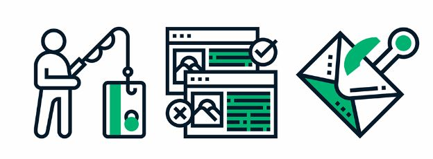

Password Strength
Creating strong passwords is one of the most essential steps in protecting your online accounts. A strong password typically consists of at least 12 characters and includes a mix of uppercase and lowercase letters, numbers, and special symbols.
Avoid using easily guessable information like birthdays or common words. Instead, consider using a passphrase—a sequence of random words or a memorable sentence. Additionally, using unique passwords for each account helps prevent a single breach from compromising multiple accounts, making your online presence more secure.
Phishing
Phishing is a deceptive tactic used by cybercriminals to trick individuals into revealing personal information, such as usernames, passwords, or credit card details. To avoid falling victim to phishing attacks, always be cautious when clicking on links in emails or text messages, especially if they are from unknown senders.
Look for signs of authenticity, such as proper grammar and a professional tone, as many phishing attempts contain errors. It's also wise to verify the sender's email address and directly visit websites by typing the URL into your browser rather than clicking on provided links.
Privacy Precautions
Maintaining your online privacy is crucial in today's digital age. Start by regularly reviewing the privacy settings on your social media accounts and limiting the amount of personal information you share publicly. Be mindful of the apps you download, as many may request access to your location or contacts without a valid reason.
Use encrypted messaging services and avoid using public Wi-Fi for sensitive transactions, as these networks can be vulnerable to eavesdropping. By taking these precautions, you can better protect your personal data from unwanted access and maintain greater control over your online presence.